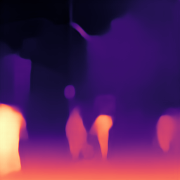
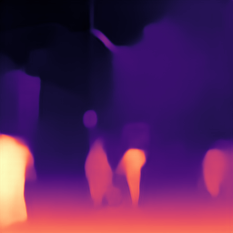

We introduce a way to learn to estimate a scene representation from a single image by predicting a low-dimensional subspace of optical flow for each training example, which encompasses the variety of possible camera and object movement. Supervision is provided by a novel loss which measures the distance between this predicted flow subspace and an observed optical flow. This provides a new approach to learning scene representation tasks, such as monocular depth prediction or instance segmentation, in an unsupervised fashion using in-the-wild input videos without requiring camera poses, intrinsics, or an explicit multi-view stereo step. We evaluate our method in multiple settings, including an indoor depth prediction task where it achieves comparable performance to recent methods trained with more supervision.

Each row of the following table shows an input image and the predicted output (disparity and embedding) from our network. The rightmost column is updated live and shows the similarity (in embedding space) to the point under the cursor. Mouse over the input images to explore the object embedding. (See Figure 5 and Section 4.3 in the paper.)
[Requires JavaScript and SVG filter support. Tested in Chrome 96, Firefox 94 (works best in Chrome).]


 
